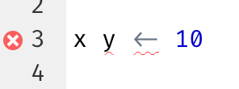
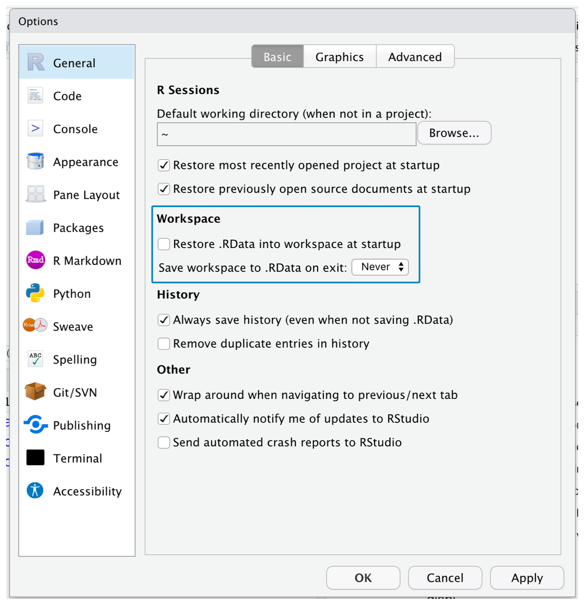
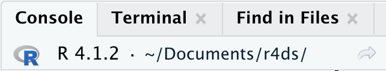
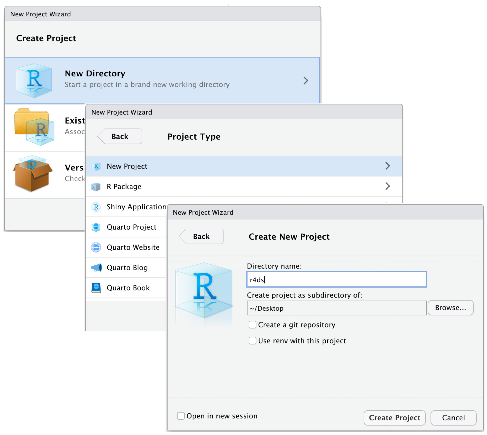

Workflow: scripts and projects
This chapter will introduce you to two essential tools for organizing your code: scripts and projects.
Scripts
So far, you have used the console to run code. That’s a great place to start, but you’ll find it gets cramped pretty quickly as you create more complex ggplot2 graphics and longer dplyr pipelines. To give yourself more room to work, use the script editor. Open it up by clicking the File menu, selecting New File, then R script, or using the keyboard shortcut Cmd/Ctrl + Shift + N. Now you’ll see four panes, as in Figure 1. The script editor is a great place to experiment with your code. When you want to change something, you don’t have to re-type the whole thing, you can just edit the script and re-run it. And once you have written code that works and does what you want, you can save it as a script file to easily return to later.
Running code
The script editor is an excellent place for building complex ggplot2 plots or long sequences of dplyr manipulations. The key to using the script editor effectively is to memorize one of the most important keyboard shortcuts: Cmd/Ctrl + Enter. This executes the current R expression in the console. For example, take the code below.
library(dplyr)
library(nycflights13)
not_cancelled <- flights |>
filter(!is.na(dep_delay)█, !is.na(arr_delay))
not_cancelled |>
group_by(year, month, day) |>
summarize(mean = mean(dep_delay))If your cursor is at █, pressing Cmd/Ctrl + Enter will run the complete command that generates not_cancelled. It will also move the cursor to the following statement (beginning with not_cancelled |>). That makes it easy to step through your complete script by repeatedly pressing Cmd/Ctrl + Enter.
Instead of running your code expression-by-expression, you can also execute the complete script in one step with Cmd/Ctrl + Shift + S. Doing this regularly is a great way to ensure that you’ve captured all the important parts of your code in the script.
We recommend you always start your script with the packages you need. That way, if you share your code with others, they can easily see which packages they need to install. Note, however, that you should never include install.packages() in a script you share. It’s inconsiderate to hand off a script that will change something on their computer if they’re not being careful!
When working through future chapters, we highly recommend starting in the script editor and practicing your keyboard shortcuts. Over time, sending code to the console in this way will become so natural that you won’t even think about it.
RStudio diagnostics
In the script editor, RStudio will highlight syntax errors with a red squiggly line and a cross in the sidebar:

Hover over the cross to see what the problem is:

RStudio will also let you know about potential problems:

Saving and naming
RStudio automatically saves the contents of the script editor when you quit, and automatically reloads it when you re-open. Nevertheless, it’s a good idea to avoid Untitled1, Untitled2, Untitled3, and so on and instead save your scripts and to give them informative names.
It might be tempting to name your files code.R or myscript.R, but you should think a bit harder before choosing a name for your file. Three important principles for file naming are as follows:
- File names should be machine readable: avoid spaces, symbols, and special characters. Don’t rely on case sensitivity to distinguish files.
- File names should be human readable: use file names to describe what’s in the file.
- File names should play well with default ordering: start file names with numbers so that alphabetical sorting puts them in the order they get used.
For example, suppose you have the following files in a project folder.
alternative model.R
code for exploratory analysis.r
finalreport.qmd
FinalReport.qmd
fig 1.png
Figure_02.png
model_first_try.R
run-first.r
temp.txtThere are a variety of problems here: it’s hard to find which file to run first, file names contain spaces, there are two files with the same name but different capitalization (finalreport vs. FinalReport1), and some names don’t describe their contents (run-first and temp).
Here’s a better way of naming and organizing the same set of files:
01-load-data.R
02-exploratory-analysis.R
03-model-approach-1.R
04-model-approach-2.R
fig-01.png
fig-02.png
report-2022-03-20.qmd
report-2022-04-02.qmd
report-draft-notes.txtNumbering the key scripts make it obvious in which order to run them and a consistent naming scheme makes it easier to see what varies. Additionally, the figures are labelled similarly, the reports are distinguished by dates included in the file names, and temp is renamed to report-draft-notes to better describe its contents. If you have a lot of files in a directory, taking organization one step further and placing different types of files (scripts, figures, etc.) in different directories is recommended.
Projects
One day, you will need to quit R, go do something else, and return to your analysis later. One day, you will be working on multiple analyses simultaneously and you want to keep them separate. One day, you will need to bring data from the outside world into R and send numerical results and figures from R back out into the world.
To handle these real life situations, you need to make two decisions:
What is the source of truth? What will you save as your lasting record of what happened?
Where does your analysis live?
What is the source of truth?
As a beginner, it’s okay to rely on your current Environment to contain all the objects you have created throughout your analysis. However, to make it easier to work on larger projects or collaborate with others, your source of truth should be the R scripts. With your R scripts (and your data files), you can recreate the environment. With only your environment, it’s much harder to recreate your R scripts: you’ll either have to retype a lot of code from memory (inevitably making mistakes along the way) or you’ll have to carefully mine your R history.
To help keep your R scripts as the source of truth for your analysis, we highly recommend that you instruct RStudio not to preserve your workspace between sessions. You can do this either by running usethis::use_blank_slate()2 or by mimicking the options shown in Figure 2. This will cause you some short-term pain, because now when you restart RStudio, it will no longer remember the code that you ran last time nor will the objects you created or the datasets you read be available to use. But this short-term pain saves you long-term agony because it forces you to capture all important procedures in your code. There’s nothing worse than discovering three months after the fact that you’ve only stored the results of an important calculation in your environment, not the calculation itself in your code.

There is a great pair of keyboard shortcuts that will work together to make sure you’ve captured the important parts of your code in the editor:
- Press Cmd/Ctrl + Shift + 0/F10 to restart R.
- Press Cmd/Ctrl + Shift + S to re-run the current script.
We collectively use this pattern hundreds of times a week.
Alternatively, if you don’t use keyboard shortcuts, you can go to Session > Restart R and then highlight and re-run your current script.
RStudio server
If you’re using RStudio server, your R session is never restarted by default. When you close your RStudio server tab, it might feel like you’re closing R, but the server actually keeps it running in the background. The next time you return, you’ll be in exactly the same place you left. This makes it even more important to regularly restart R so that you’re starting with a clean slate.
Where does your analysis live?
R has a powerful notion of the working directory. This is where R looks for files that you ask it to load, and where it will put any files that you ask it to save. RStudio shows your current working directory at the top of the console:

And you can print this out in R code by running getwd():
getwd()
#> [1] "/Users/hadley/Documents/r4ds"In this R session, the current working directory (think of it as “home”) is in hadley’s Documents folder, in a subfolder called r4ds. This code will return a different result when you run it, because your computer has a different directory structure than Hadley’s!
As a beginning R user, it’s OK to let your working directory be your home directory, documents directory, or any other weird directory on your computer. But you’re more than a handful of chapters into this book, and you’re no longer a beginner. Very soon now you should evolve to organizing your projects into directories and, when working on a project, set R’s working directory to the associated directory.
You can set the working directory from within R but we do not recommend it:
setwd("/path/to/my/CoolProject")There’s a better way; a way that also puts you on the path to managing your R work like an expert. That way is the RStudio project.
RStudio projects
Keeping all the files associated with a given project (input data, R scripts, analytical results, and figures) together in one directory is such a wise and common practice that RStudio has built-in support for this via projects. Let’s make a project for you to use while you’re working through the rest of this book. Click File > New Project, then follow the steps shown in Figure 3.

Call your project r4ds and think carefully about which subdirectory you put the project in. If you don’t store it somewhere sensible, it will be hard to find it in the future!
Once this process is complete, you’ll get a new RStudio project just for this book. Check that the “home” of your project is the current working directory:
getwd()
#> [1] /Users/hadley/Documents/r4dsNow enter the following commands in the script editor, and save the file, calling it “diamonds.R”. Then, create a new folder called “data”. You can do this by clicking on the “New Folder” button in the Files pane in RStudio. Finally, run the complete script which will save a PNG and CSV file into your project directory. Don’t worry about the details, you’ll learn them later in the book.
library(tidyverse)
ggplot(diamonds, aes(x = carat, y = price)) +
geom_hex()
ggsave("diamonds.png")
write_csv(diamonds, "data/diamonds.csv")Quit RStudio. Inspect the folder associated with your project — notice the .Rproj file. Double-click that file to re-open the project. Notice you get back to where you left off: it’s the same working directory and command history, and all the files you were working on are still open. Because you followed our instructions above, you will, however, have a completely fresh environment, guaranteeing that you’re starting with a clean slate.
In your favorite OS-specific way, search your computer for diamonds.png and you will find the PNG (no surprise) but also the script that created it (diamonds.R). This is a huge win! One day, you will want to remake a figure or just understand where it came from. If you rigorously save figures to files with R code and never with the mouse or the clipboard, you will be able to reproduce old work with ease!
Relative and absolute paths
Once you’re inside a project, you should only ever use relative paths not absolute paths. What’s the difference? A relative path is relative to the working directory, i.e. the project’s home. When Hadley wrote data/diamonds.csv above it was a shortcut for /Users/hadley/Documents/r4ds/data/diamonds.csv. But importantly, if Mine ran this code on her computer, it would point to /Users/Mine/Documents/r4ds/data/diamonds.csv. This is why relative paths are important: they’ll work regardless of where the R project folder ends up.
Absolute paths point to the same place regardless of your working directory. They look a little different depending on your operating system. On Windows they start with a drive letter (e.g., C:) or two backslashes (e.g., \\servername) and on Mac/Linux they start with a slash “/” (e.g., /users/hadley). You should never use absolute paths in your scripts, because they hinder sharing: no one else will have exactly the same directory configuration as you.
There’s another important difference between operating systems: how you separate the components of the path. Mac and Linux uses slashes (e.g., data/diamonds.csv) and Windows uses backslashes (e.g., data\diamonds.csv). R can work with either type (no matter what platform you’re currently using), but unfortunately, backslashes mean something special to R, and to get a single backslash in the path, you need to type two backslashes! That makes life frustrating, so we recommend always using the Linux/Mac style with forward slashes.
Exercises
Go to the RStudio Tips Twitter account, https://twitter.com/rstudiotips and find one tip that looks interesting. Practice using it!
What other common mistakes will RStudio diagnostics report? Read https://support.posit.co/hc/en-us/articles/205753617-Code-Diagnostics to find out.
Summary
In this chapter, you’ve learned how to organize your R code in scripts (files) and projects (directories). Much like code style, this may feel like busywork at first. But as you accumulate more code across multiple projects, you’ll learn to appreciate how a little up front organisation can save you a bunch of time down the road.
In summary, scripts and projects give you a solid workflow that will serve you well in the future:
- Create one RStudio project for each data analysis project.
- Save your scripts (with informative names) in the project, edit them, run them in bits or as a whole. Restart R frequently to make sure you’ve captured everything in your scripts.
- Only ever use relative paths, not absolute paths.
Then everything you need is in one place and cleanly separated from all the other projects that you are working on.
So far, we’ve worked with datasets bundled inside of R packages. This makes it easier to get some practice on pre-prepared data, but obviously your data won’t be available in this way. So in the next chapter, you’re going to learn how load data from disk into your R session using the readr package.
Not to mention that you’re tempting fate by using “final” in the name 😆 The comic Piled Higher and Deeper has a fun strip on this.↩︎
If you don’t have usethis installed, you can install it with
install.packages("usethis").↩︎